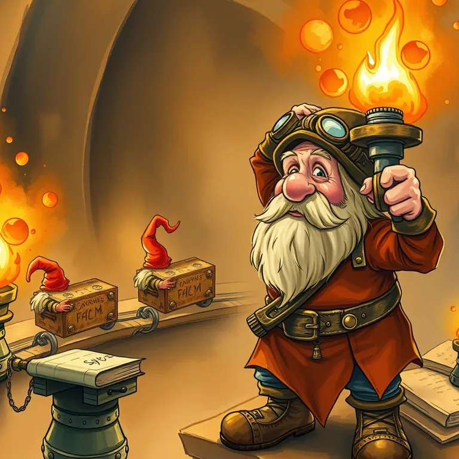

Zapier: AI by Zapier

The chain reaction was genuinely clever. It was also, under the new pricing, extremely easy to trigger by accident.
Zapier: AI by Zapier is best used for connecting apps together with AI-assisted automation logic when you need something smarter than a simple trigger-and-action chain. A realm full of disconnected tools wastes time on manual handoffs. This adds a layer of AI reasoning to the connections between them. It lands at #32 of 51 on Solos Gems (6.3/10) for automation.
The chain reaction was genuinely clever, connecting three guild halls with one lever pull. It was also, under the current pricing, extremely easy to trigger by accident more often than intended.
- Value for price5.5/10
- Capability7.5/10
- Ease of use6/10
- Trial safety6.5/10
Enormous library of app integrations, likely covering whatever tools your guild already uses.
Captured from zapier.com. Recon report, not a resident's memoir.Best used for
Connecting apps together with AI-assisted automation logic when you need something smarter than a simple trigger-and-action chain.
How it helps the realm
A realm full of disconnected tools wastes time on manual handoffs. This adds a layer of AI reasoning to the connections between them.
Boons
- Enormous library of app integrations, likely covering whatever tools your guild already uses.
- AI Actions add reasoning to automations, not just rigid if-this-then-that logic.
- Well-established and reliable, with a large community for troubleshooting.
Curses
- Costs can climb quickly as automation volume and complexity grow.
- Complex multi-step automations still take real time to design and debug properly.
See how this compares to Make →
Common questions
Does it connect to tools I'm probably already using?
Very likely yes, its integration library is one of the largest available.
What does the AI actually add compared to basic automation?
It lets automations make judgment calls, like categorizing or summarizing, instead of pure rigid rules.
Is it beginner-friendly?
Basic automations are approachable; complex multi-step ones have a real learning curve.